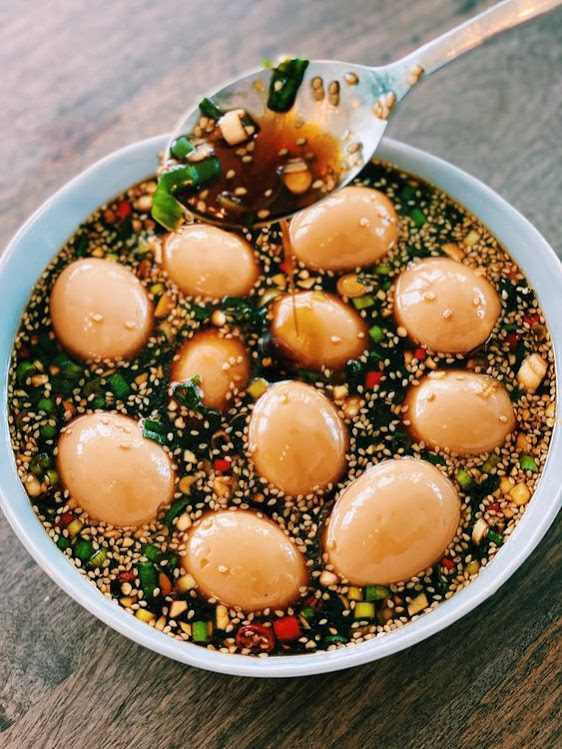

Mayak Gyeran

Description
These Korean marinated eggs are addicting, and that's exactly what "mayak gyeran" suggests: drug eggs.
In college, boiling eggs can be a bit of a chore for someone who doesn't spend a lot of time in the kitchen, but preparing these eggs always provided a long-lasting reward.
These eggs would last me for at least a week, and they went with just about anything: rice, cucumbers, noodles... well...
I guess that was just about everything I would ever make.
Even after I ate all the eggs, I could dip my soba into the leftover marinade or pour over one last bowl of rice.
Ingredients
- 1 dash salt
- 1 splash rice vinegar
- 1 dozen eggs
Marinade
- 1/2 cup water
- 1 cup soy sauce
- 1/2 cup honey
- 2 tbsp sesame oil
- 3 stalks green onion
- 1 tbsp minced garlic
- 2 Korean green peppers
- 1 red chili
- 1 tbsp sesame seeds
Steps
- Boil a pot of water and add salt and vinegar.
This will make the eggs easier to peel.
Add your eggs and cook for 6-8 minutes.
Transfer eggs to an ice bath and let cool for at least 10 minutes.
Carefully peel the eggs and set aside.
- In a container, add garlic, sliced green peppers, sliced red chili, green onion, sesame seeds, soy sauce, honey, sesame oil, and water and mix until combined.
Add the eggs.
If the eggs are not completely covered by the marinade, you can lay a paper towel sheet over them, tucking the sheet into the marinade in the gaps between the eggs, so that the marinade can travel through the sheet to the other sides of the eggs.
Marinate overnight.
- Serve with a bowl of rice. Don't forget to add the sauce to the rice!